My First Instrument
I was first introduced to music with piano, a common instrument for children to learn.
I am a deeply commited band student at Evergreen Valley High School. I play the Euphonium, which is also known as the baby tuba in the music world. I have played in the Wind Ensemble as the principal Euphonist, and have played in outside ensembles like the Santa Clara County Honor Band. Here's my story:
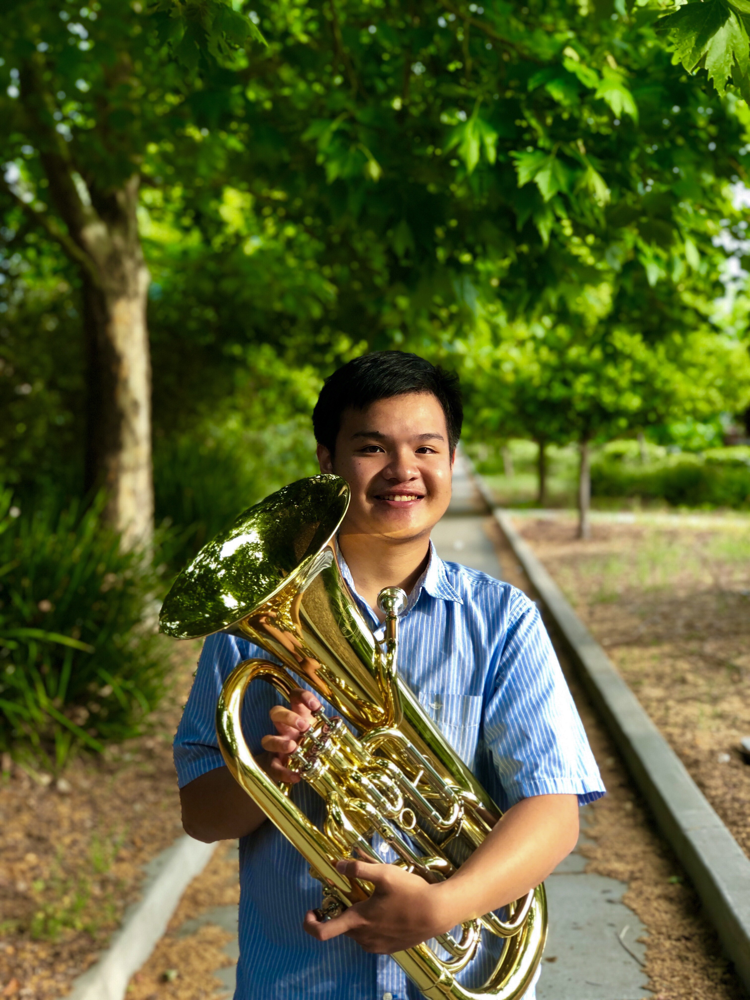
Before I started my experience on Euphonium, I played the trumpet, which is an instrument used to play many military calls. I couldn't properly play the trumpet since my embochere are pretty big for the cup size of the mouthpiece. It was in my freshman year when my band teacher, Mr. Barnhill, saw this issue and asked I switched on the Euphonium. It was a rough switch, requiring a stronger control of airflow and a stronger grip since it was larger than the trumpet. My skills were lackluster at the time, and I didn't make it to Wind Ensemble when I auditioned in my freshman year.
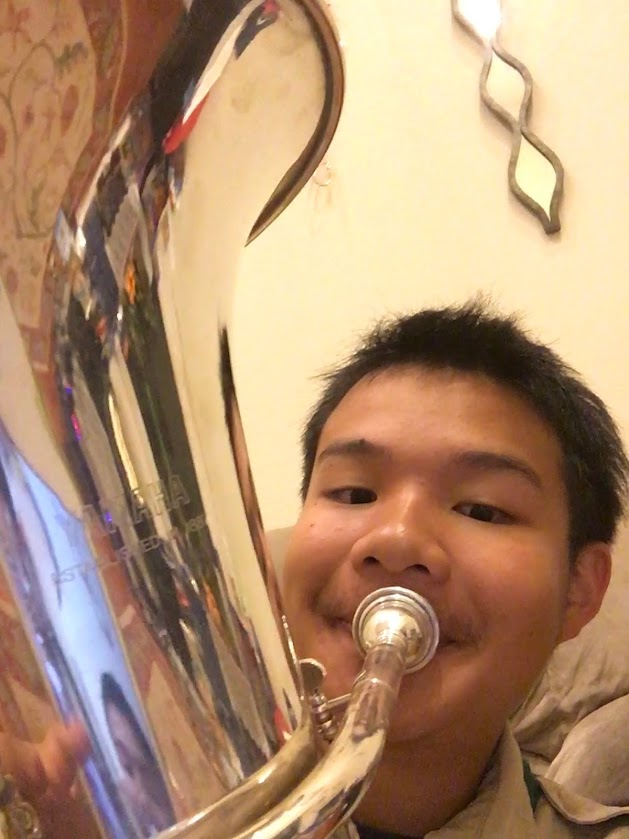
Ever since that day, I practiced every day, working on key technical skills such as my vibrato and articulations to make me a better player than I used to be. When I tested for Mr. Barnhill the second time, he complimented on the dedications and improvements demonstrated in my playing. This time I got into Wind Ensemble and play at graduation for the class of 2017 at Santa Clara University. What was even more special was that we were invited to play in New York at the renown Carnegie Hall & Central Park the following year. I personally bought my own Euphonium (Besson BE-165) to allow me to sound more beautifully in an ambient enviroment.
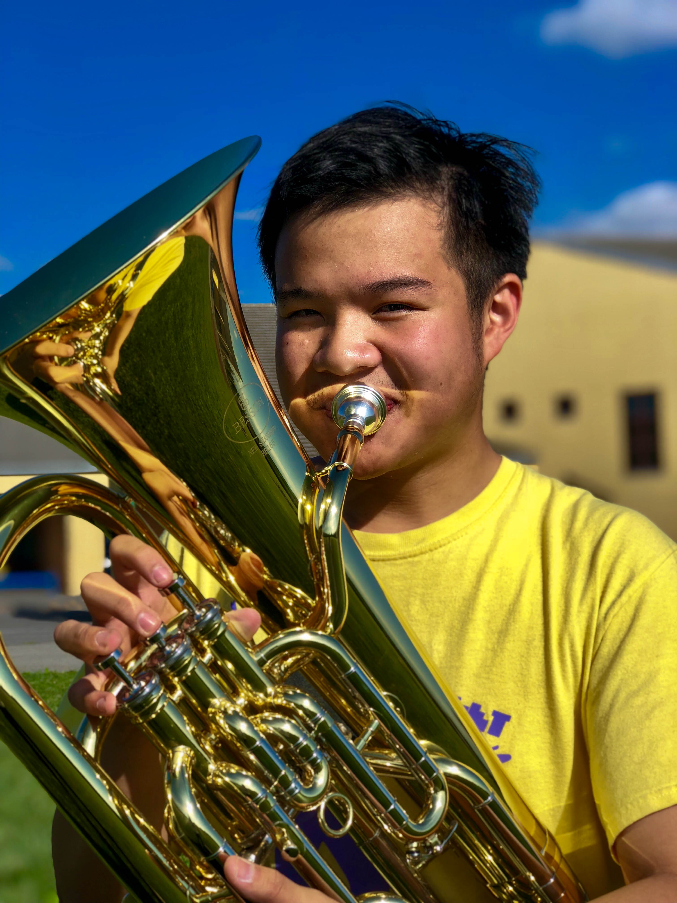
Now I am now the only Euphonium player in Wind Ensemble. I am featured in all of the Euphonium solos, and I practiced them to perfection. I decided to take my playing to the next level, auditioning at the Santa Clara County Honor Band. I was delighted to have made third chair of five in the Euphonium section. Beyond playing in outside groups, I recently started a company called Evergreen Music Mentors where I use my musicianship and expertise on the Euphonium to motivate students to become better musicians. It will last even after I graduate, impacting the music community for years to come. In my 4 years in this stellar band program, being involved in the music community is what developed my personality and character. I believe that without it, my image wouldn't be complete.
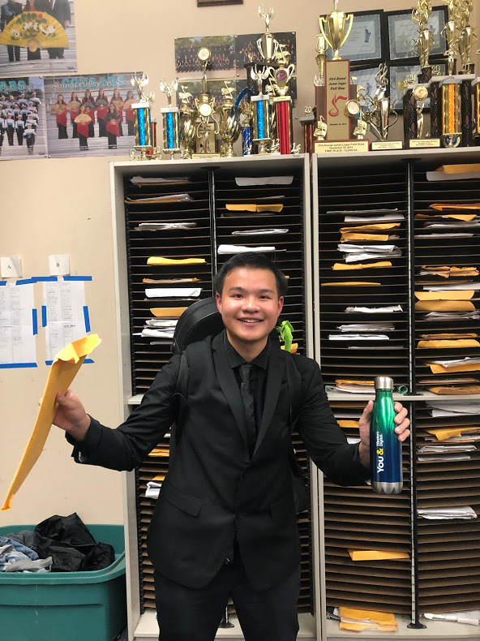
Now that I graduated from Evergreen Valley High School, there are a lot of awaiting for me in the music world. I formed Euphie's Quintet, a Euphonium quintet with some players from All State & National Honor Bands. Playing with them further enhances my Euphonium virtuoso with their execution on their instruments. In college, I hope to continue to play in community bands and continue my music tutoring program.
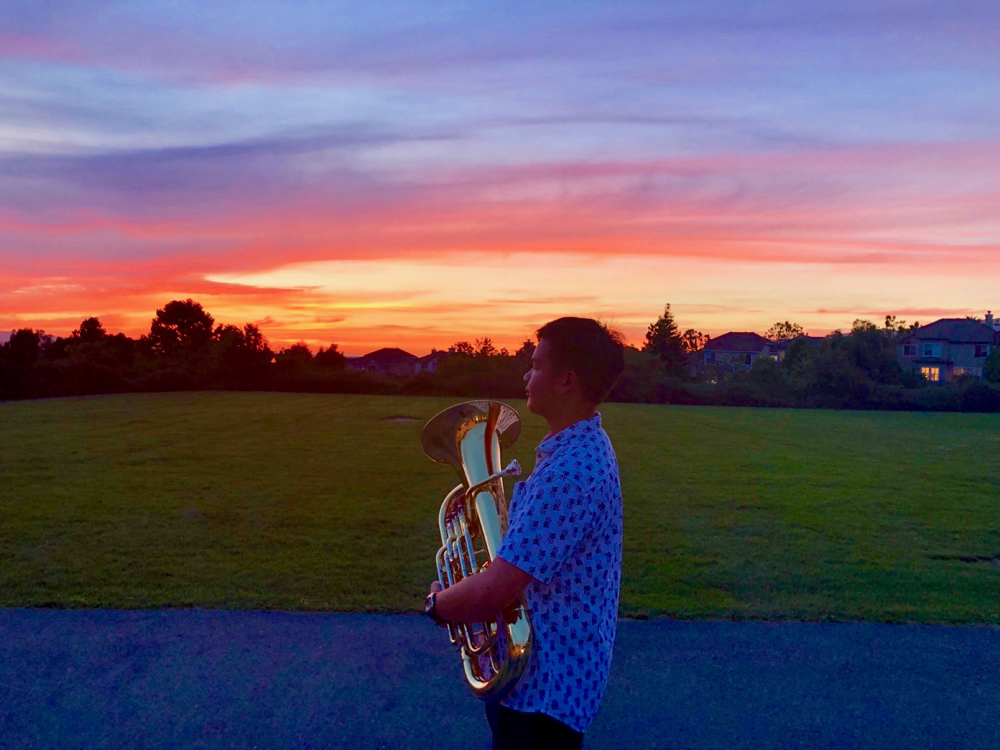
Here is a more in-depth vision on how I became a player from my past musical experiences with pictures:
I was first introduced to music with piano, a common instrument for children to learn.
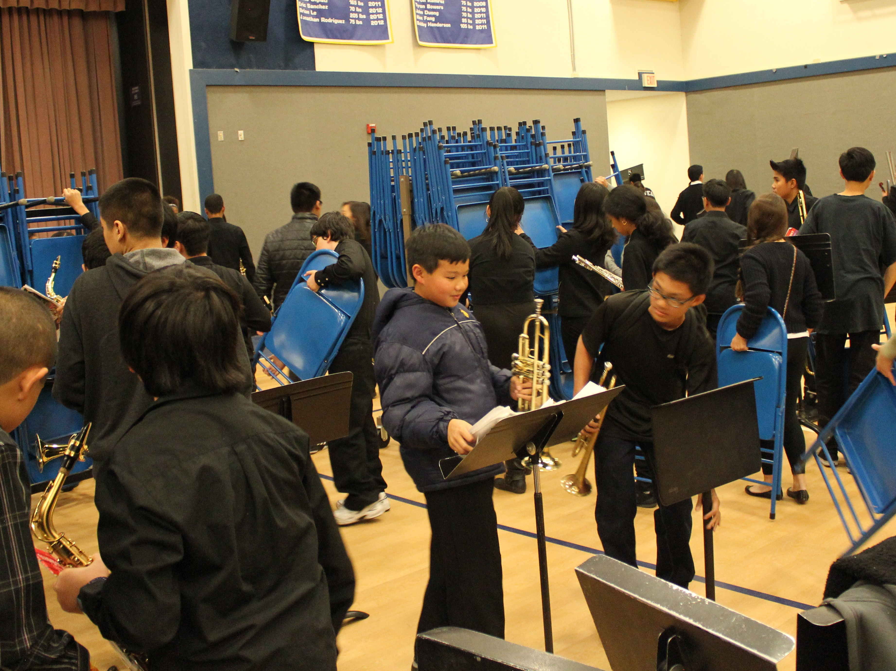
Before I played Euphonium, I played on the trumpet. The problem was that my embochere was too large, and it looked like I was eating the mouthpiece (I can play it fine now).
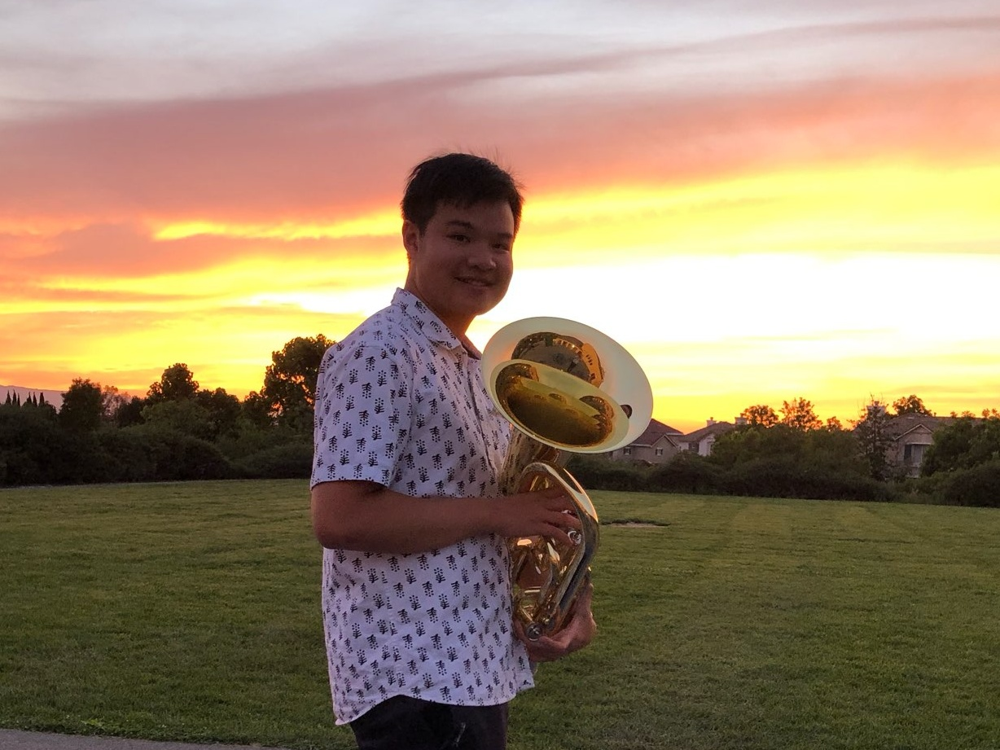
I first switched to the Euphonium in the second semester of my freshmen year. It was big, and easier to play for me.
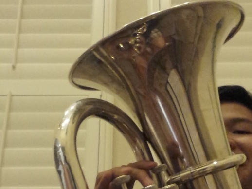
The Yamaha YEP-201 was a 3 Valve Student Horn. The tone was pretty robust for a student instrument. It was pretty old so I had to tune it up so it could be played. I opted to switch for a new horn later in the years.
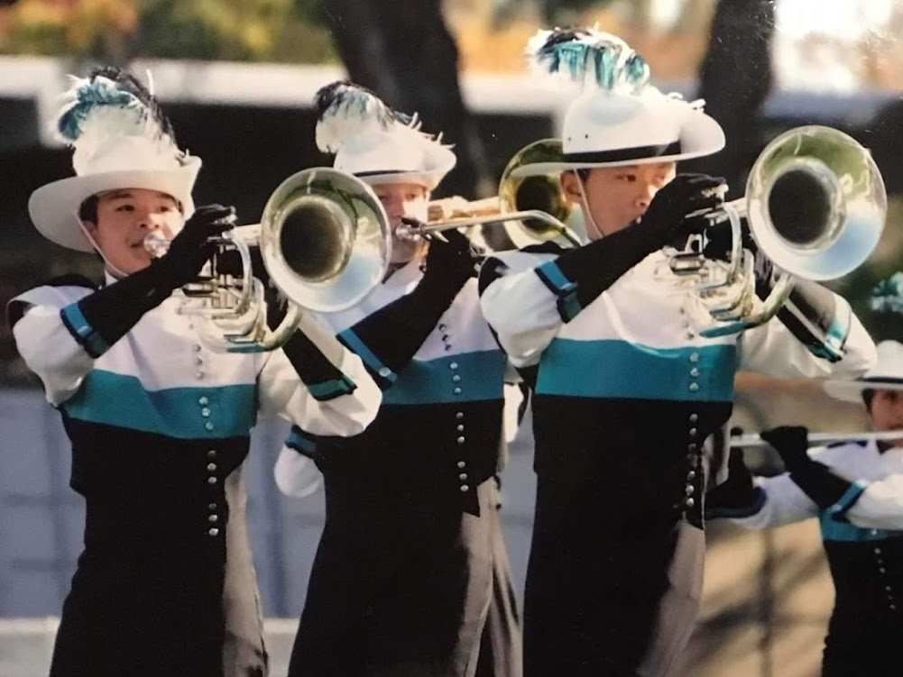
I was a 4 year member of the EVHS Marching Band. I played on the Yamaha YBH-301M, which is a marching baritone. Our group went out and won many competitions in the WBA 2A category. I won the most improved sophormore award that year.
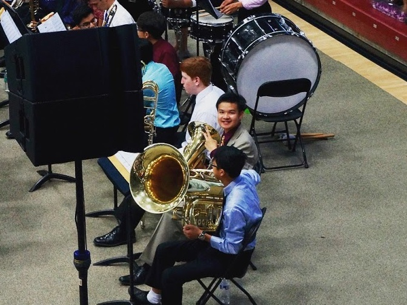
I made it into the EVHS Wind Ensemble the end of my Sophomore year. We played for my sister's graduation at Santa Clara University.
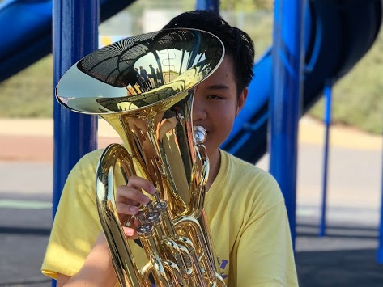
Since I got into the Wind Ensemble, I decided I should got a 4 valve Euphonium (3+1) system to play in Carnegie Hall. During Black Friday, Woodwind and Brasswind had a big sale and I got the Besson BE-165 for 20% off!
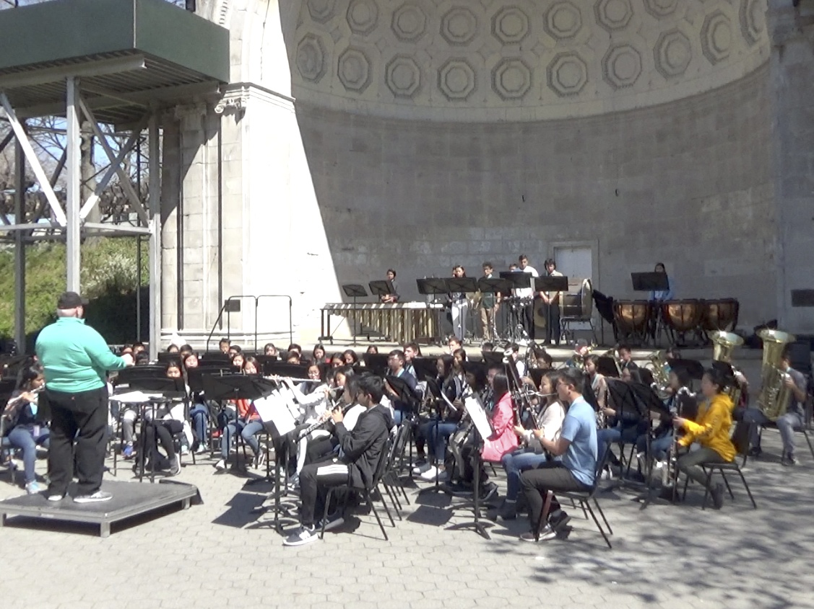
My band traveled to New York in the Spring of 2018. We had a memorable experienece playing at Central Park, here's a look:
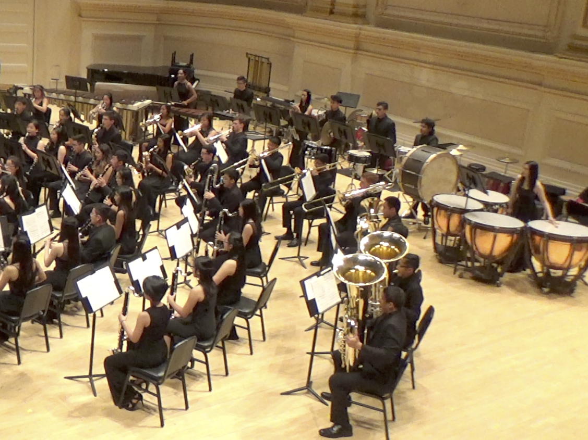
The experience was invigorating when I performed at Carnegie Hall. It's resonance, enormity, and presence built my enthusiasm to play my Euphonium to perfection.
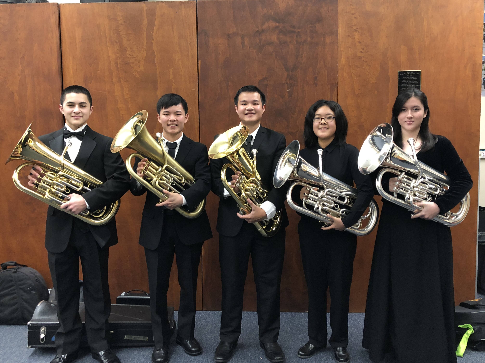
I was delighted to have made third chair of five in the Euphonium section. The vigor of this ensemble is stronger than in any band I have previously been in. Working with him along other Euphonists, who been in premier all-state ensembles, they helped me develop a professional tone with proficient technique in the instrument.
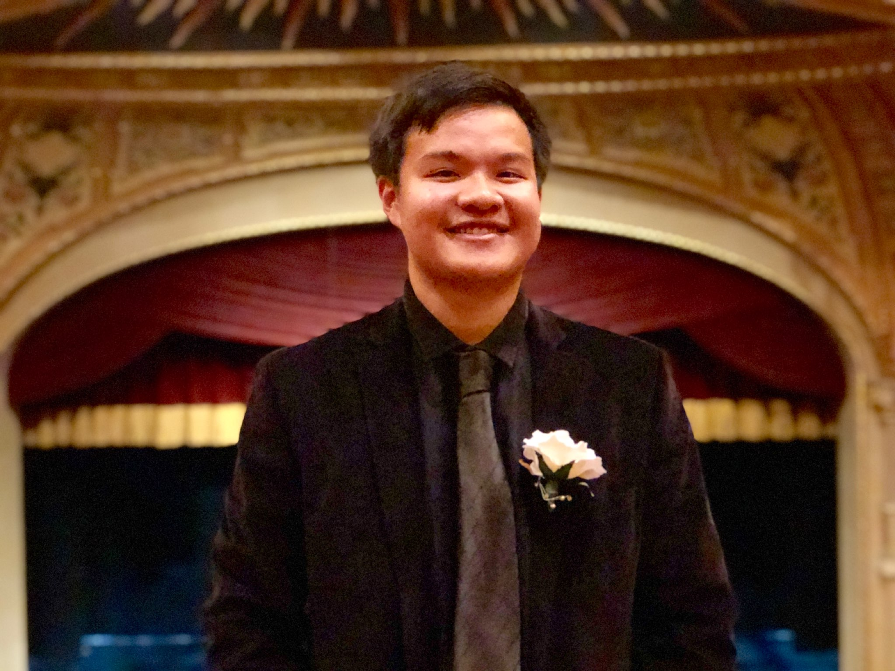
This is the final concert of my high school career and also the final concert of my band teacher's career. It highlights me as a Euphonium player in my solo on Suite of Old American Dances.

A Euphonium Quintet based off of the Santa Clara County Honor Band Euphonium Section
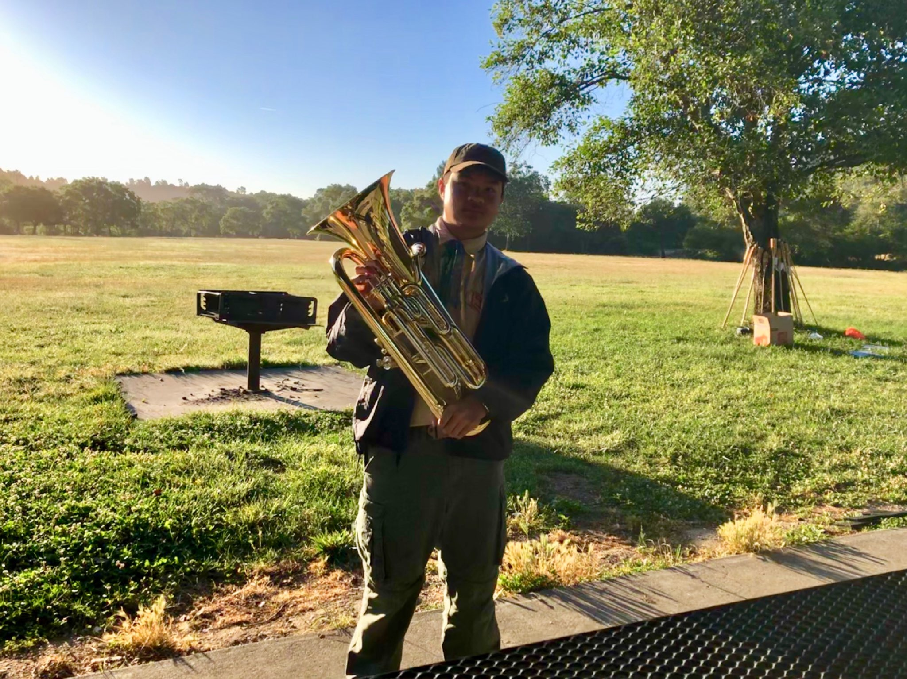
{kind=link}
{kind=link}
{kind=link}
{kind=link}
{kind=link}
{kind=link}
{kind=link}
{kind=link}
{kind=link}
{kind=link}